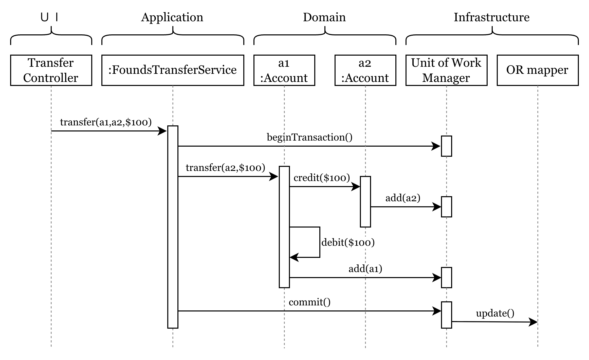

從時序圖解析 Domain Model 的互動邊界與職責
在學習 Domain-Driven Design (DDD) 時，釐清「領域模型 (Domain Model)」與系統其他組件間的邊界，是將理論轉化為實作的關鍵。透過一份經典的「資金轉帳 (Funds Transfer)」時序圖，我們可以清楚地洞察系統架構的四個層次：UI、Application、Domain 與 Infrastructure，並藉此回答三個在 DDD 中最常被探討的核心觀念。

1. Domain（領域）是由哪些物件組成的？
在這張跨帳戶轉帳的時序圖中，Domain 層包含了真正的業務主角：a1 :Account（轉出帳戶）與 a2 :Account（轉入帳戶）。
在 DDD 中，這類核心物件通常被設計為「實體 (Entity)」或「聚合根 (Aggregate Root)」。它們絕不僅僅是一堆只有 getter/setter 的純資料結構（也就是所謂的貧血模型），而是充滿行為 (Behavior) 與業務規則的物件：
a1知道如何檢查餘額並對自己進行扣款 (debit($100))。a2知道如何為自己進行入帳 (credit($100))。- 在部分設計中（如圖所示），
a1甚至包含了與另一個帳戶物件互動的邏輯：當接收到轉帳指令transfer(a2, $100)時，它能主動去呼叫a2的credit。
這彰顯了 DDD 的核心理念：高內聚。所有的轉帳規則、金額檢查等商業邏輯，都牢牢鎖死在這些 Domain 物件中，無論誰來呼叫它，規則都不會被輕易繞過。
2. 外部物件如何與 Domain 互動？
這裡的「外部物件」指的是來自應用層 (Application Layer) 的 :FoundsTransferService。在 DDD 架構下，應用服務扮演的是「協調者」或「管弦樂團指揮」的角色。
觀察圖中 Application 如何操作 Domain：
- 傳遞意圖：UI 層（
Transfer Controller）將使用者的操作轉化為程式請求transfer(a1, a2, $100)交給 Service。 - 準備環境：Service 先呼叫基礎設施層的
Unit of Work Manager，開啟交易 (beginTransaction())。 - 下達任務指派，而非干涉細節（重要！）：接著，Service 並沒有從
a1拿取金額、自己做減法、再存回a1。相反地，它直接將任務委派給領域物件，向a1發出命令transfer(a2, $100)。 - 結束工作：Domain 完成內部的運算與狀態變更後，Service 再協調基礎設施進行提交 (
commit())。
這說明了一件事：外部物件（Application Service）不負責做業務運算，只負責編排 Use Case 的流程（管理事務與載入/儲存實體）。
3. Domain 如何與外部設施互動？
在傳統開發中，當資料變更時，我們常常直接讓邏輯層呼叫 Database.update()。但 DDD 十分強調「基礎設施的隔離（持久化無知）」，Domain 不應該知道 SQL 或 ORM 架構。那狀態改變要怎麼儲存？
從圖示的後半段給出了一個經典模式（結合 Unit of Work）：
- 當
a1呼叫a2.credit($100)導致a2的狀態（餘額）改變時，會向基礎設施層發出一個add(a2)的通知，將自己註冊到Unit of Work Manager（工作單元）。這代表著：「我的狀態變更了（Dirty），請把我登記起來」。 - 同理，
a1在debit($100)完成後，也呼叫add(a1)將自己登記進工作單元。 - Domain 物件的責任到此為止！它並沒有自己依賴
OR mapper去寫入資料庫。它只依賴抽象的概念（告知狀態有變）。 - 直到最外層的 Application 呼叫
commit()時，Unit of Work Manager才統一將剛剛登記的a1與a2的最終狀態變化，透過update()轉交給OR mapper寫入儲存系統中。
如此一來，Domain 核心被完美地保護了起來，保持了與底層技術細節的解耦，測試領域邏輯時也不再需要啟動真實的資料庫。
結語
透過一張 Funds Transfer 的簡單時序圖，我們能深刻體驗到 DDD 架構中層級分明的責任歸屬：
- UI 負責溝通介接
- Application 負責協調流程
- Domain 專注於保護並執行商業邏輯
- Infrastructure 負責隱藏技術細節（DB、外部 API）
將行為從 Service 歸還給 Entity，是我們踏出「貧血模型」，走向真正具備豐富表達力的「領域驅動設計」的第一步。